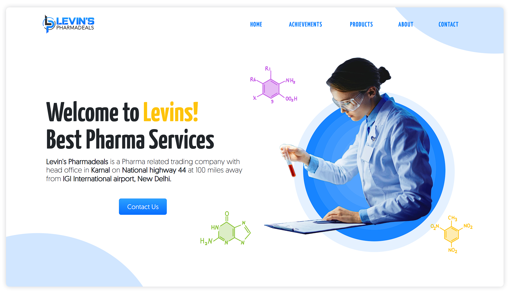

Projects
Welcome to my portfolio,
Where creativity meets innovation!
Within these sections, you'll find a diverse showcase of my projects spanning various domains, each a testament to my passion for technology and software development.
Graphics Engine Development
When I am learning/using software like Blender, Maya, and Unreal for animation and gaming, I started making plugins for these software packages. However, I wanted a playground where I could easily create 3D tools. Having experience in OpenGL and Vulkan, I decided to develop a graphics engine called Tiler.
Tiler - Graphics Engine
Repository (work-in-progress)
Project Description:
This graphics engine functions as a modular state machine, offering a range of capabilities including:
- Rendering 2D and 3D scenes
- Switching between different graphics APIs
- Providing a text editor for shaders
- Implementing post-processing effects
Tiler, currently, serves as a playground for developing algorithms related to geometry, UVs, materials, and animation. It will soon incorporate tools for these tasks.
Key Components:
- Shader Language: GLSL
- Graphics API: OpenGL (with glad) and soon Vulkan
- Windowing System: SDL
- GUI Library: ImGui
- Asset Importers: Assimp and stb
- Math Library: glm
Blender 3D Addons
Within the realm of 3D design and animation, my exploration extends to the development of Blender 3D Addons. With a keen eye for addressing specific needs in the creative process, these addons introduce new tools, features, and automation, amplifying the capabilities of Blender for artists and animators
Custom Tools - Generative Rigs
Code (July 2023)


This add-on help in creating other tools, those tools automatically available to all the instances of blender by hiding the complex build/refeshing work itself.
Tools Created By This Addon
List of main tools created:
- Reset Constraints - to fix the retargeting of targets in bone constaints, especially when scaling.
- Twist & Tweak - to generate customizable twists and tweak in any rig.
- Add Chain Controls - powerful tool for hendling bone chains with many options.
- Add Spine Pivot - to generate a biped spine with swichable pivot.
and, many more.
CUI - Custom UI for Rigs
Code (May 2023)


This is a powerful tool for creating user interface of the rig. this tool lets user to link any path to button (all widgets in blender have the full path in context menu), even from other editor like geometry nodes and shader editor.
GLink - Live Link Graphs
Code (November 2022)


This Addon helps user to automatically update f-curves in blender graph editor, which is helpful in when using space switching techniques like - Aim Space and World Space.
This also include Glink Manager, which helps in managing lots of graph-links, example - using this in create walk cycle, linking one side to another.
WebApp Using npm/Webpack
Venturing into the world of web development, my WebApp Using NPM Packages section underscores the utilization of Node Package Manager (NPM).
Website for Levins Pharmadeals Pvt
Repository (July 2022)

I created this website for Levins Pharmadeals Pvt. This website contain images in .svg format which helps in scaling and animation.
Technical Details
List of technologies used in this project:
- Webpack - for creating the build of project.
- Bootstrap - for creating custom theme for website.
- SASS - for simplified CSS code generation.
see package.json for more info
Website for Limeless Media Pvt
Repository (Feb 2022)

And this website is created for Limeless Media Pvt.
Technical Details
List of technologies used in this project:
- Webpack - for creating the build of project.
- Bootstrap - for creating custom theme for website.
- SASS - for simplified CSS code generation.
see package.json for more info
Java Swing Applications
Delving into the realm of desktop application development, the Java Swing Applications section showcases my proficiency in crafting intuitive and interactive user interfaces using the Java Swing framework.
MS Paint
Repository (July 2021)

I tried to upgrade Microsoft Paint, and developed it in JavaSE with Swing framework. Features:
- Can use Layers and Filters
- PNG support (without losing transparency)
- Support Windows, MacOS and Linux
Download exe/jar files (Reqire JavaSE to run).
Snake Game
Repository (June 2021)

Challenge your reflexes with the classic Snake Game!
If you want to know, "How's the snake moving in the JPanel?", may this Show Controls option will help you. Snake can move in both light and dark colored lines, as shown in image above. Moreover, you can also change the speed of the snake, here.
MS Notepad
Repository (May 2021)


Witness the simplicity and power of MS Notepad!
MSNotepad is a simple text editor, with cross platform support, and a basic text-editing program which enables computer users to create documents. It is light-weight editor which entirely looks like Microsoft Windows' Notepad.
MSNotepad writes the settings of the application in the Settings.txt file, before closing the application. And load it again at the starting of the application.